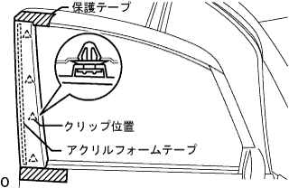

Front door RH decomposition |
| 1. Multiplex network Master switch ASSY |
 |
Use a flathead screwdriver with a protective tape to remove the claws.
Cut the connector and remove the multi -plattsukusanetsu to work Master Sweets ASSY.
| 2. The front door router frame bracket garnish RH is removed |
Remove the clip (upper part) by hand.
 |
Remove the claws (lower) while lifting it by hand, and remove the front door front trower frame braketto taganitsui RH.
| 3. Remove the door pull handle |
Remove the screw and remove the door -pull handle.
| 4. Remove the front door trim board SUB-ASSY RH |
 |
Take off the screw.
Use a plus driver to rotate the center of the clip 90 ° and remove the clip.
Use a flathead driver with a protective tape while pulling the trim board inside the vehicle to remove the nine clips in the figure.
Pull up the front door trim board RH and remove it.
| 5. Remove the front door glass woeza strip INN RH |
Remove the claws and remove the front door glass weather strip INN RH from the front door trim board RH.
| 6. Remove the front door inside handle SUB-ASSY RH |
Remove the claws at the rear of the front door inside handle RH.
Pull the front door inside handle RH backwards to remove the front claw.
Cut the cable and remove the front door inside handle RH.
| 7. Remove the front door trim bracket No.1 |
Remove the two screws and remove the front door trim braketto.
| 8. Remove the door electronic key osciller (with smart door lock) |
Take off two screws.
Cut the connector and remove the door electrical oxyillator key.
| 9. Remove the front door service hall cover RH |
| 10. Remove the front de astifna cushion No.1 |
Remove the two clips and remove the front door Stiffuna cotion No. 1.
| 11. The front door glass SUB-ASSY RH is removed |
Connect the Regular Master Switch and move the door glass to the position of the figure (where the mounting bolt can be seen).
 |
Remove the two bolts and remove the front door glass RH.
| 12. The front door window regulator SUB-ASSY RH is removed |
Cut the connector.
 |
Loosen the provisional bolt.
Remove the 5 bolts and remove the front door window wolegi yurer RH.
Remove the tentative bolt from the leggelator.
| 13. Power window regulator motor ASSY RH is removed |
Use a torx driver (T25) to remove the three screws and remove the power window legg Yurager motor ASSY RH.
| 14. Remove the front door glass run RH |
| 15. The front door frame SUB-ASSY FR LWR RH is removed |
Remove the bolt.
Remove the front door frame FR LWR RH downward.
| 16. The front door frame SUB-ASSY RR LWR RH is removed |
Remove the bolt.
Remove the front door frame RR LWR RH downward.
| 17. The front door lock ASSY RH (Motsuki) is removed |
Cut the connector.
Use a Torxo Socket Lenge (T30) to remove the three screws and remove the front door motorkirock ASSY RH.
| 18. Front door out -side handle cover RH is removed |
Take off the plug hole.
Use a torxo wrench (T30) to loosen the screw, and remove the front door -out side handle cover from the door panel with the key cylinder.
| 19. Remove the front door outside handle ASSY RH |
Cut the connector.(There is a smart door lock)
Pull the outside handle backwards and remove the outside handle frame.
Pull the outside handle outside the vehicle and remove it from the outside handle frame.
 |
Remove the front door -out side handle pad FR and front door outside handle pats RR.
| 20. Front door outdoor handle frame SUB-ASSY RH is removed |
Remove two of the smart sub wire connector clamps and harness clamps from the inner panel.(Car with a smart door lock)
Use a torxo wrench (T30) to remove the screw and remove the front door outside handle frame RH.
| 21. The front door window frame molding RR RH is removed |
|  |
Put a protective tape on the front door panel.
Remove the junction of the acrylic form tape and the four clips, and remove the front door window frame molding RR RH.
| 22. The front door window frame molding FR RH is removed |
 |
Put a protective tape on the front door panel
Remove the junction of the acrylic form tape and the two clips, and remove the front door window frame molding FR RH upward.
| 23. Outari View Mirror ASSY RH removed |
Take off the three screws.
Cut the connector and remove the Otari View Miller ASSY RH.
| 24. Front door glass Weather strip ASSY OUT RH is removed |
 |
Put a protective tape on the door panel along the Wesstritop.
Use the roof molding rimba to remove the claws and remove the front door glass Weather Weather Stritup ASSY OUT RH.
| 25. Remove the front door with the strip RH |
Use the clip resover to remove the clip.
 |
Remove the front doorweather stretup RH while peeling off the adhesive part of the double -sided tape.